Contributed by Miles Lumbard
Photographs by Miles Lumbard
|
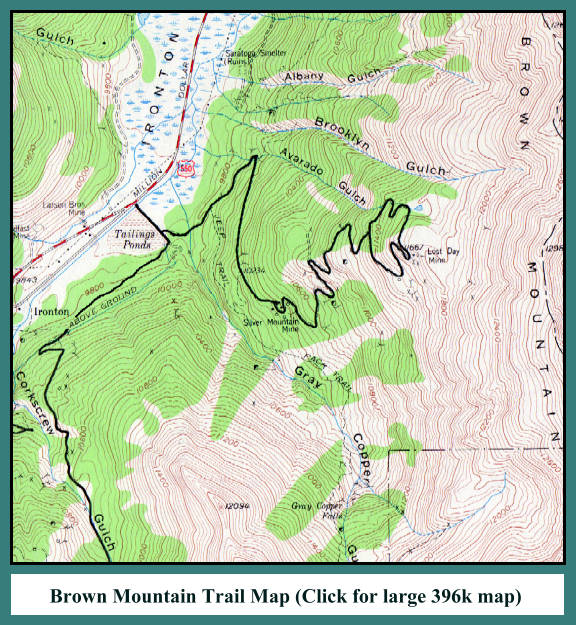 |

| The Brown Mountain Trail splits off from the Corkscrew Trail, a short distance from US 550. It climbs the side of Brown Mountain, passed the Silver Mountain Mine, to the site of the Lost Day Mine. The trail isn't particularly difficult, although it is steep in places. Still, it should not be attempted in anything but a real 4x4. You'll want Granny Low on the transfer case before yer done. |
| The trail heads north, across the face of the mountain, climbin' gently. At the switchback, an old boiler can be seen, just up the hillside. There's also a caved in mine shaft, so you'll want to be real careful if you go explorin'. Be sure to keep any small fry away from that hole. |
| The next point of interest is the Silver Mountain Mine. The buildings are still fairly intact, although they are showing the ravages of time, weather, and vandalism. The remains of a small mill are on the site, along with a jaw crusher, air compressor, and gasoline motor. The latter equipment sits in the middle of a bog, caused by water running out of the mine tunnel. If you aim to go wanderin' out to look at this stuff, bring yer hip waders. The area around the mill is a nice place to hunt for ore samples and crystals. |
| Headin' on up from this point, the trail steepens up and climbs to the small, unnamed basin, high on the side of Brown Mountain. There's a beautiful little pond that makes a nice spot to have lunch, or camp out if yer so inclined. The trail goes both left and right from this point, and let's you explore the basin, and the site of the Lost Day Mine. There are awesome views of Ironton Park and the Hayden Range to the west, and Grey Copper Gulch, and Red Mountain to the south. Keep an eye out up above the ridge of Brown Mountain for golden eagles riding the winds. |
| The Brown Mountain Trail is a fun little side trip, with some interesting history on display, and incredible views from the top. Like many of the short, up and back trails, it's usually not crowded with other 4-wheelers, so it makes a nice break from trails like The Bear, and Engineer. Enjoy it, but as always, be careful, take only pictures, and leave only footprints. |
|
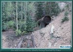 |
An old boiler, slowly being buried by time
(168k) |

|
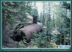 |
It used to power somebody's dream,
now they're all forgotten (144k) |

|
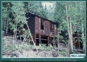 |
The remains of the Silver Mountain
Mine's buildings (165k) |

|
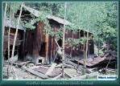 |
Another dream crumbles slowly to dust
(183k) |

|
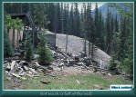 |
Not much left of the mill
(139k) |

|
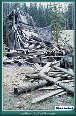 |
Another shot of the mill
(156k) |

|
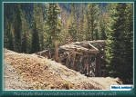 |
The trestle that once carried
ore cars to the mill (145k) |

|
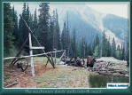 |
The machinery sinks slowly
into the muck (166k) |

|
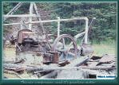 |
The air compressor and
it's gasoline motor (140k) |

|
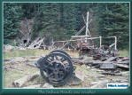 |
The Joshua Hendy jaw crusher
(138k) |

|
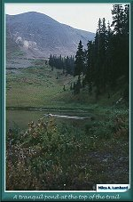 |
A tranquil pond at the top of the trail
(108k) |

|
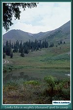 |
Looks like a mighty pleasant
spot to camp (116k) |

|
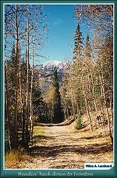 |
Headin' back down to Ironton
(181k) |

|
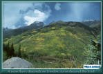 |
snow flurry descends on Ironton,
as we descend the trail (145k) |


|
The Narrow Gauge Circle is written, maintained,and hosted by: Mark L. Evans Send Comments to:Mark L. Evans All original materials, text, and digital images Copyright © 1996-2017 Mark L. Evans. All rights reserved. Imitation is said to be the "sincerest" form of flattery.....Please don't flatter us without permission. |